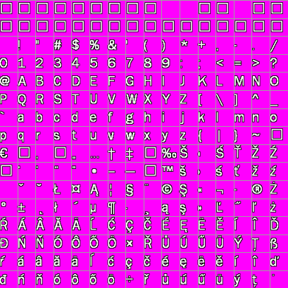
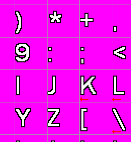

To display all the game texts (subtitles, captions, GUI texts etc.) WME can use so-called "bitmap fonts". It means the font is formed by an image, which contains all the letters. This bitmap font image can look like this:
This image contains exactly 256 characters. As you can see, the upper part contains standard alphabet, numbers and punctuation, while the lower part can contain special character specific for various national alphabets (such as the German umlaut characters, Spanish accents etc.).
Fortunately you don't need to create this image by hand, there exist several 3rd party utilities for creating bitmap fonts:
Bitmap Font Builder (mailware)
FONText (shareware)
The only think you need to keep in mind while creating the bitmap fonts is that the letters need to be left-aligned to the grid. What I mean by this? Your letters have some fixed dimensions, for example 32x32 pixels, in case of the above image. Those dimension actually make an invisible grid within your image:

See, the letters are aligned in a 32x32 grid. This is crucial, since WME uses this "invisible" grid to recognize where each letter lies within the image. Notice that the letters are really left-aligned with the grid:

Ok, we have the image itself, but how will WME know where the letters lie and how big are they? We will need to create a definition file, which describes the font properties. The definition file will look like this:
FONT
{
IMAGE = "fonts\franklin.png"
TRANSPARENT = 255,0,255
COLUMNS = 16
TILE_WIDTH = 32
TILE_HEIGHT = 32
AUTO_WIDTH = TRUE
EXPAND_WIDTH = 1
SPACE_WIDTH = 4
PAINT_WHOLE_CELL = FALSE
}
Description:
Note that instead of the IMAGE attribute you can also use SPRITE keyword and reference a WME sprite instead. This allows you to even create animated fonts.
Resources:
See also: